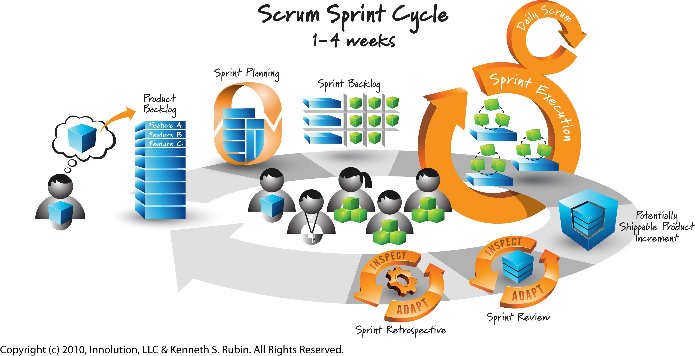

Agile perversion
by Javier Salinas / @MuSTa1nE
About me
What is this talk about?
Agenda
- Waterfall
- Scrum
- Agile
Waterfall model

Waterfall problems
- No working software is produced until late.
- High amounts of risk and uncertainty.
- It is difficult to measure progress within stages.
- Cannot accommodate changing requirements.
- Integration is done as a "big-bang. at the very end, which doesn't allow identifying any technological or business bottleneck or challenges early.
Scrum
XP - eXtremme Programming

Manifesto for Agile Software Development
We are uncovering better ways of developing software by doing it and helping others do it. Through this work we have come to value:
- Individuals and interactions over processes and tools
- Working software over comprehensive documentation
- Customer collaboration over contract negotiation
- Responding to change over following a plan
That is, while there is value in the items on the right, we value the items on the left more.
"Agile is ordering tapas until you're full, not ordering a 10-course meal" - Neil Killick
"Build projects around motivated individuals. Give them the environment and support they need, and trust them to get the job done." - 5th Principle from Agile Manifesto
The necessity of estimates is the lack of trust
"Customer collaboration over contract negotiation" - Agile Manifesto
"Until each specific feature is understood in detail, it’s impossible to estimate the cost of a software project accurately." - McConnell
That's not very Agile.
date estimated 2011 - terminated on 2015
cost estimated 288 millions - final cost 506 millions
Why estimate?
Prediction

"Working software is the primary measure of progress." - 7th Principle from Agile Manifesto
Prioritisation
Focus on value not in cost
Analysis & Understanding
Do it but don't make magic numbers from it
The Nature of Software Development
- Organising By Feature
- Planning Feature by Feature
- Building the product, feature by feature
- Slice features thinly
- Build quality in every day
Slicing heuristic
“A user story ready to be worked on must have only one acceptance test." - Neil Killick
THANK YOU!
Contact me
- jsalinaspolo@gmail.com
@MuSTa1nE
- blog: http://www.jspcore.com